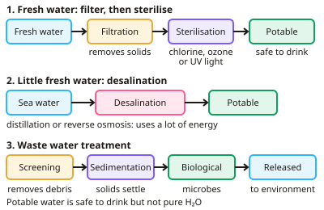

GCSE Chemistry · Topic 10
Using resources
Using resources is about how we use the Earth's materials sustainably, from drinking water to metals, plastics and fertilisers.
We will look at how water is made safe to drink, how sewage is treated, and how life cycle assessments and recycling reduce our impact.
Then we cover corrosion, alloys, ceramics, composites and polymers, sustainable metal extraction, and how NPK fertilisers are made.
- 7 subtopics
- 245 questions
- Free: 10.1 notes and 10 questions
In this topic
- 10.1Earth's resources and potable waterFree below · 27 questions
- 10.2Life cycle assessment and recyclingOpen in Full Marks · 20 questions
- 10.3Required practical: analysis and purification of water samplesOpen in Full Marks · 65 questions
- 10.4Corrosion, rusting and its preventionOpen in Full Marks · 31 questions
- 10.5Alloys, ceramics, composites and polymers as materialsOpen in Full Marks · 47 questions
- 10.6Sustainable metal extraction: bioleaching, phytomining and recycling metalsOpen in Full Marks · 26 questions
- 10.7Fertilisers and NPK compoundsOpen in Full Marks · 29 questions
10.1 · Free notes
Earth's resources and potable water

Key points
- Natural resources are supplemented by agriculture and manufacturing to provide food, timber, clothing and fuels; some resources are finite (e.g. fossil fuels), others are renewable (e.g. timber).
- Sustainable development meets the needs of today without harming the ability of future generations to meet their own needs.
- Potable water is safe to drink, though not pure; fresh water sources are treated by filtration (removing solids) then sterilisation (e.g. chlorine, ozone or UV light).
- In areas of limited fresh water, desalination of salty or sea water can be used (e.g. distillation or reverse osmosis), though it requires a lot of energy.
- Waste water requires treatment (screening, sedimentation, biological treatment) before being released into the environment.
In more detail
- Water treatment steps: filtration through wire mesh and sand beds removes solids; sterilisation with chlorine, ozone or UV kills microbes.
- Desalination methods: distillation boils seawater and condenses the steam; reverse osmosis pushes water through a membrane. Both need lots of energy, so they are expensive.
- Sewage treatment: screening and grit removal → sedimentation (sludge and effluent) → aerobic biological treatment of effluent → anaerobic digestion of sludge (makes biogas).
- Groundwater vs waste water: groundwater from aquifers is usually cleaner and easier to treat than water from rivers polluted by sewage or industry.
Practice
Earth's resources and potable water: 10 questions
Pick an answer to check it, or open the answer for the explanation.
1. What does 'potable' mean?
- Completely pure
- Safe to drink
- Salty
- Non-existent
Show answer
B: Safe to drink. Potable water contains low levels of dissolved substances but isn't pure H₂O.
2. What is used to kill microbes in water treatment?
- Filtration only
- Chlorine, ozone or UV light
- Sedimentation only
- Nothing is needed
Show answer
B: Chlorine, ozone or UV light. Sterilisation kills harmful microorganisms after solids are filtered out.
3. What is desalination?
- Removing salt from water, typically seawater
- Adding salt to water
- Filtering out solids only
- Removing oxygen from water
Show answer
A: Removing salt from water, typically seawater. This can provide potable water where fresh water is scarce.
4. Why is desalination not used everywhere?
- It produces toxic water
- It requires a lot of energy
- It removes all minerals
- It is illegal
Show answer
B: It requires a lot of energy. The energy cost makes it expensive compared with treating fresh water.
5. Which resource is described as finite?
- Timber
- Fossil fuels
- Solar energy
- Wind
Show answer
B: Fossil fuels. Fossil fuels take millions of years to form and cannot be replaced quickly.
6. Which process could provide fresh water in a coastal area with little rainfall?
- Fractional distillation of crude oil
- Desalination of seawater
- Electrolysis of water
- Combustion
Show answer
B: Desalination of seawater. Though it requires significant energy input.
7. Which of these is a renewable resource?
- Crude oil
- Timber from managed forests
- Coal
- Natural gas
Show answer
B: Timber from managed forests. Managed forests can be replanted and regrow within a human timescale. Crude oil, coal and natural gas are finite fossil fuels that take millions of years to form.
8. Which statement best describes sustainable development?
- Banning all mining and farming
- Using resources as fast as possible
- Meeting present needs without harming future generations
- Only using renewable energy at home
Show answer
C: Meeting present needs without harming future generations. Sustainable development meets today's needs while not reducing the ability of future generations to meet theirs. It does not mean stopping all resource use.
9. Why is potable water not described as pure water?
- It contains dissolved substances
- It has been boiled
- It contains no microbes
- It is always salty
Show answer
A: It contains dissolved substances. Potable water is safe to drink but usually contains dissolved minerals and salts. Pure water contains only H2O molecules.
10. What is the purpose of the filtration stage when treating fresh water?
- Kill bacteria
- Remove salt
- Add oxygen
- Remove solid particles
Show answer
D: Remove solid particles. Filtration passes water through beds of sand and gravel to remove insoluble solids. Sterilisation, not filtration, kills microbes.
Keep going in Full Marks
Full Marks has 27 questions on Earth's resources and potable water (17 more than here), set out in practice levels. You also get notes and 3D models for all 7 subtopics of Using resources, plus games, timed exams and past papers.
On your exam board
- AQATopic 10: Using resources
- OCR ATopic C6: Global challenges
- OCR BTopic C1: Air and water, Topic C3: Chemicals of the natural environment, Topic C4: Material choices, Topic C6: Making useful chemicals
- EdexcelTopic 2: States of matter and mixtures, Topic 4: Extracting metals and equilibria, Topic 5: Separate chemistry 1
- CambridgeTopic 9: Metals, Topic 10: Chemistry of the environment